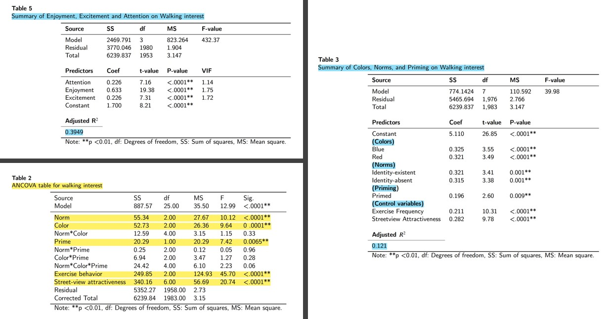
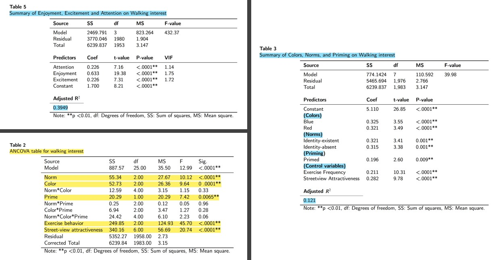

Summary:
Sedentary lifestyles have become increasingly prevalent worldwide, leading the World Health Organization to designate the lack of physical activity as a major global wellness concern. Encouraging moderate-intensity physical activity has thus become a public health priority.
In this study, we aimed to explore ways to encourage people to walk more, so as to increase public awareness of welling being and call for an increased level of physical activity as a society.
To this end, we conducted an experiment to investigate how nudges can motivate people to walk. The fundamental proposition was that small changes to the built and social environment could promote walking desire.
Specifically, we posited that coloring sidewalks would increase people's interest in walking by making the walkways more noticeable and triggering positive emotions. To test this hypothesis, we compared participants' walking interest when sidewalks were either colored or uncolored.
We also explored the effect of priming on people's choices and behaviors. We hypothesized that priming participants by showing them walking shoes would nudge them to walk more. In the second part of our experiment, we compared participants who were primed with walking shoes to those who were not primed.
Third, we investigated the impact of social norms on walking behavior by comparing participants' walking interest when social norms were either absent or present.
Our findings demonstrate that coloring sidewalks enhances perceptual salience and individuals' moods, leading to an increased desire to walk. Priming participants with sneakers and displaying social norms also proved effective in increasing walking interest. These findings suggest that nudges can be an effective tool for promoting physical activity and fostering a culture of wellbeing.
My Work:
- Spearheaded the research design process and led the team throughout the project
- Designed and conducted a 3 x 3 x 2 full-factorial between-subject online experiment to examine key variables
- Created a compelling main scenario and several sub-scenarios for each experiment to ensure optimal participant engagement
- Developed and implemented scales to accurately measure both key dependent and control variables
- Designed and administered questionnaires to collect participants' responses and feedback
- Implemented rigorous quality control measures to ensure data accuracy and integrity
- Successfully recruited and managed 2,160 online participants for the study
- Provided timely and professional support to participants, including responding to email inquiries and addressing concerns
- Applied advanced statistical techniques, such as Three-Way ANOVA analysis, Multivariate analysis of variance (MANOVA), a series of one-way ANOVA, post hoc test, Ordinary Linear Regression analysis, and Mediation Analysis, to conduct comprehensive quantitative analysis
- Demonstrated a significant 5% improvement in pedestrian experience, including attitudes, interest, and emotions, through strategic interventions
- Translated research findings into easy-to-understand formats, including tables, graphs, and narratives
- Effectively communicated research objectives, methodologies, and results to diverse audiences, including both technical and non-technical stakeholders
- Delivered informative and engaging presentations at national and international conferences and workshops
Research clips:
(Experiment)
 (Data Analysis)

(Data Analysis)
